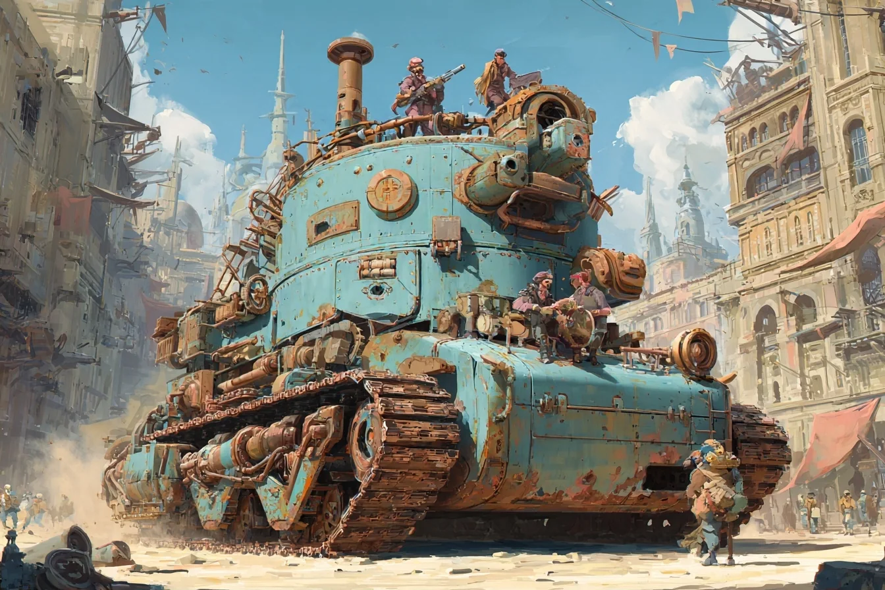
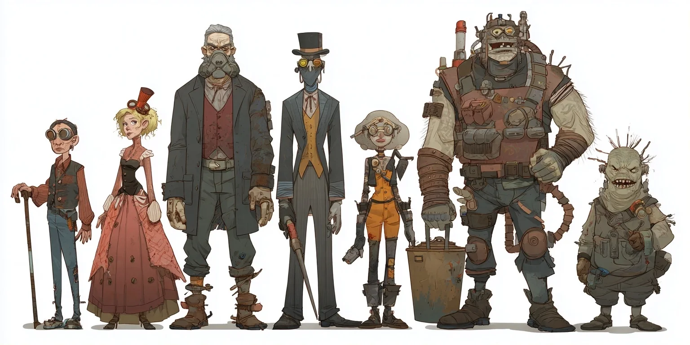
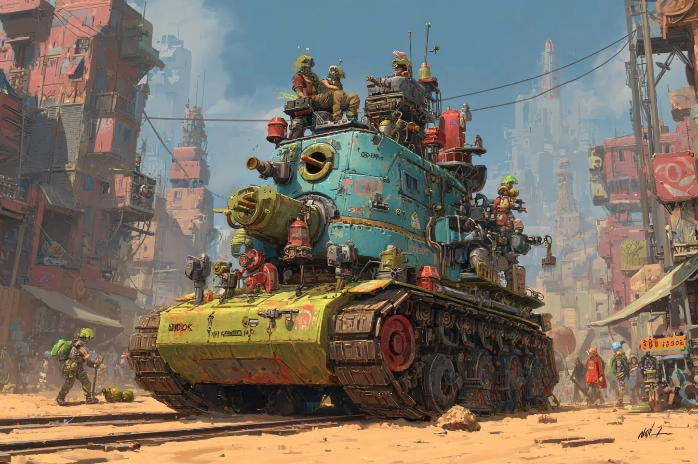
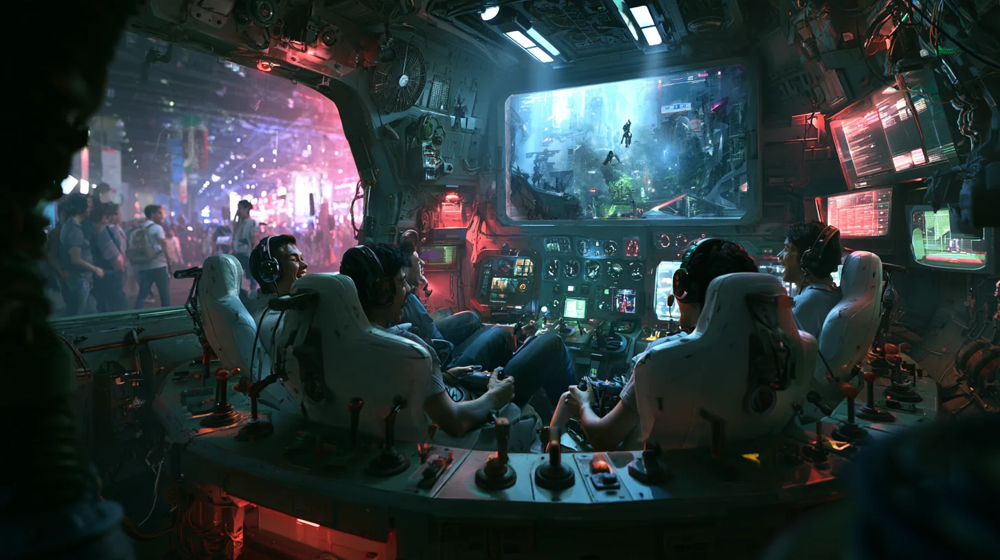
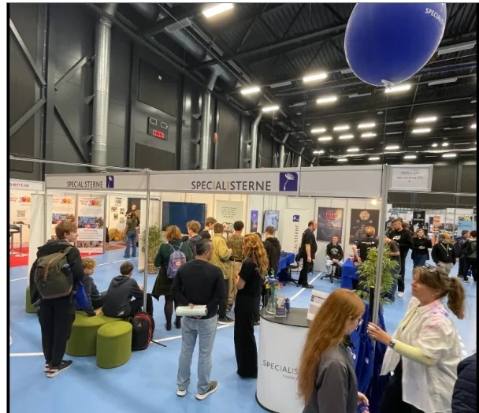
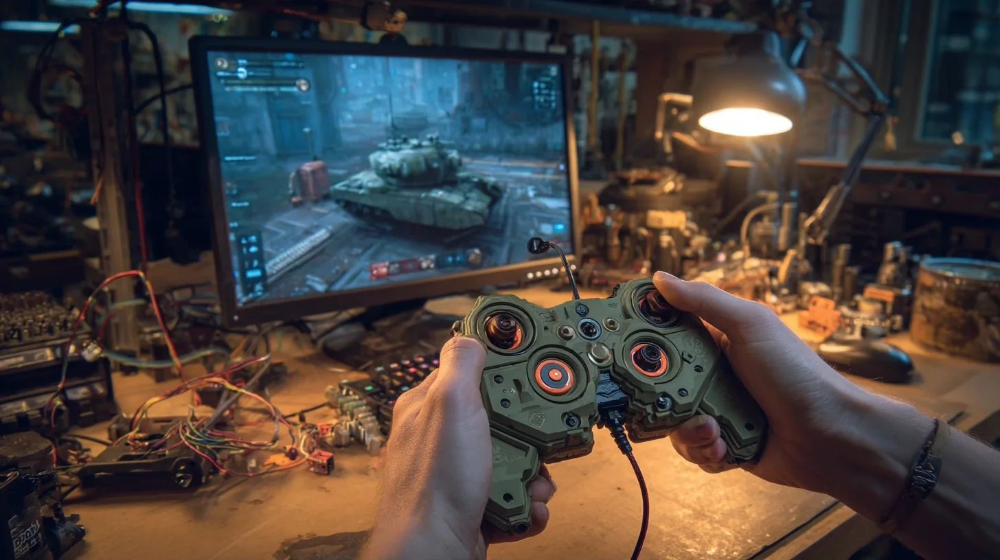

BOILERHEART II
Cranky Engines
A post-apocalyptic open world where your crew lives inside a thinking war-tank that was raised on poetry and opera, and it's never going to let you forget it. Factions with their own politics and their own art style. A world our students keep building for years, and a game we'd actually go home and play.
What's changed
We've made five or six five-minute arcade games for expos. They're fun, and they're finished. This is the next step: an open-world sandbox we'd play at home, built to still be fun after six months of development and to keep growing for two or three years after that. It's much more ambitious than anything we've done, and that's the point.
Built on BOILERHEART
Everything from the first one comes along
The core is still BOILERHEART: a crew keeps a huge thinking tank alive, and the survival stats live on the machine, not on you.
Cranky Engines adds the world around it: why the machines think, who's fighting whom, what it all looks like, and how your tank becomes your home.

The world
After the machines, before the peace
Long ago, AI got too powerful and humanity rose up against it. AI wasn't banned afterwards. It was put on a strict diet.
Raised on art
Thinking engines may learn from anything except technical material: poetry, plays, novels, paintings, war stories. So they can't fix themselves and need human crews to keep them running. And every one of them is a drama queen.
The plague generations
The machines' last attack was viral. Four generations of pandemic taught everyone to fear outsiders, so arriving in a new town is tense, trade is careful, and a sneeze starts a riot. Most people have probably been immune for two generations. Nobody's checked.
Everyone's a mutant
The war also made new kinds of people, and the science behind that is lost now. Skeletal dandies, green ogres, goggled kids, gentle giants. It gives us a cartoony cast with every body shape, and not one "default human."

The big idea for a school
Every faction has its own politics and its own style
The war goes on between several major factions, each with its own subfactions squabbling inside it. What makes them special is that each one has its own look. If a student loves steampunk, they build the steampunk faction. If another hates steampunk and loves cyberpunk, there's a faction for that too. The world grows with the team.

The Brass Parliament
Boilers, rivets, top hats. They'll debate the attack for three hours, then vote on it.

The Neon Collective
Graffiti, screens, antennas. Everything is shared, including your tank's playlist.

The Church of the Scroll
A theocracy whose 3000-year-old holy scroll is the first two books of The Lord of the Rings. Everything your faction says is heresy.

The Rolling Villages
Whole communities living on their tanks, with gardens, balconies and laundry lines. Heavy, slow, and very hard to evict.
These four are examples. The faction list is deliberately open: a new student with a new favourite style can mean a new faction on the map. (If speech AI gets good enough before launch, every faction could even get its own accent.)
Your home

The tank is your crew's base
A crew of engineers shares one big rolling machine, and it's everything a survival game's base is. It just happens to drive.
The star of the show
What does a thinking engine look like?
Every engine has the same soul: a mind raised on art that needs human hands to survive. Each faction dresses it in its own style, so whoever owns a faction also designs its engine.
Steampunk
A brass opera mask set into the boiler door that sighs steam when it sulks.
Cyberpunk
A crystal cortex in a glass tank, flickering neon with every mood.
The Church
An illuminated-manuscript face that speaks only in quotes from the Scroll.
Villages
A tree grown through the hull, talking through its leaves. When it wilts, Sanity is low.
Something BOILERHEART never had
An inside
If you're hiding from enemy shells, there has to be somewhere to hide. So the tank gets a walkable interior, built from modules that plug into the same sockets on every faction's tank. Same gameplay rooms, different paint and props.
For the first version we build one faction's interior properly. Every other faction reskins the same modules.
A living world, and a teaching engine
A world our school keeps building
A class builds a city
"For the next three weeks, this class designs and builds a town." Next time it's a dungeon, then a fortress. Every project adds something permanent to one shared world.
Visitors leave a nook
A visiting student builds a tiny corner of a town, goes home, and a few weeks later spots it in a Steam update. That's a memory, and a recruitment story.
Fun at 20%
One faction, one town, one tank and a few missions is already a game. Everything after that is growth, not required scope.
The expo version
Convention arcade mode
At our last convention, one headset meant a long line and five minutes each. Here, five people crew one tank for a short mission, sitting back to back on a bench with a big screen overhead.
Each seat is a station with its own small puzzle, and how well each person plays moves the tank's performance up or down by as much as 20%. One ButtKicker under the bench might be enough to feel the engine rumble and the hits land.

And the queue becomes the tutorial: a "loading dock" of five more seats next to the bench, where the next crew learns their stations while they wait. When nobody's at a convention, the whole rig lives in the student lounge for break-time missions.


How we'd build it
One faction first, then grow
Multiplayer on day one
Get two players into the same tank before anything else, and test it every few weeks. We learned that one the hard way on GUESTS?, and one of our students lost months to it on his own project.
One faction, one tank, one town
The BOILERHEART loop in miniature: drive, trade, one mission, one fight, the diva engine, Sanity. Prove it's fun.
The inside and the modules
A walkable interior built from modules, ready for other factions to reskin.
A second faction
The real test of the whole idea: can a new team add a new style without breaking the first?
Keep growing
More factions, class-built cities, visitor nooks, the arcade rig, and whatever the students dream up next.
For the students to decide
Forks for the vote
These are big decisions that shape the whole project. They belong to the team, so here they are side by side.
1 · Who's on the crew?
The pitch assumes multiplayer, but this is exactly the kind of fork to vote on.
2 · What kind of world?
3 · Which faction first?
Steampunk, cyberpunk, the Church, the Villages, or something new. Whoever builds first sets the template for everyone else.
4 · The arcade rig: now or later?
A great side project for the hardware-minded (3D printing, Arduino, haptics), or a goal on the horizon once the game works.
For the staff room
Why it earns its place
It's a curriculum, not just a project
- Years of meaningful work that isn't thrown away when a term ends.
- Every student can own a faction, a town, a room, or an engine's personality.
- Level design, networking, crafting, AI, hardware, art direction: something for everyone.
And it's a game we'd actually play
- Diva AIs raised on poetry are funny, and a sharp comment on real AI too.
- A crew game made by crews of every kind of mind.
- The arcade mode turns the expo queue into part of the show.